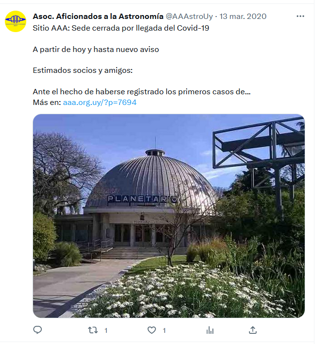
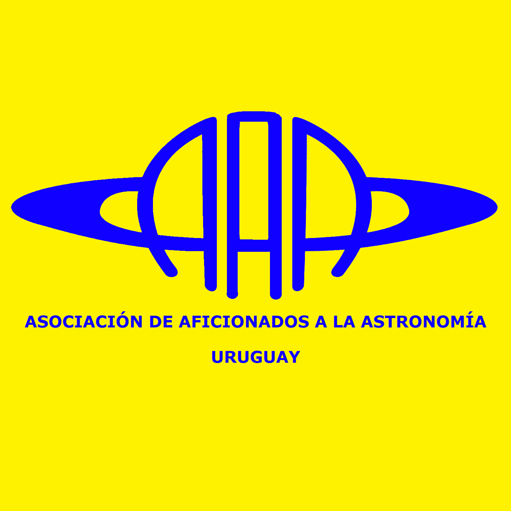
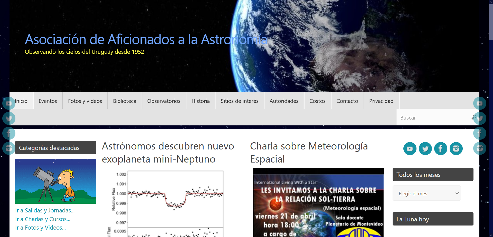
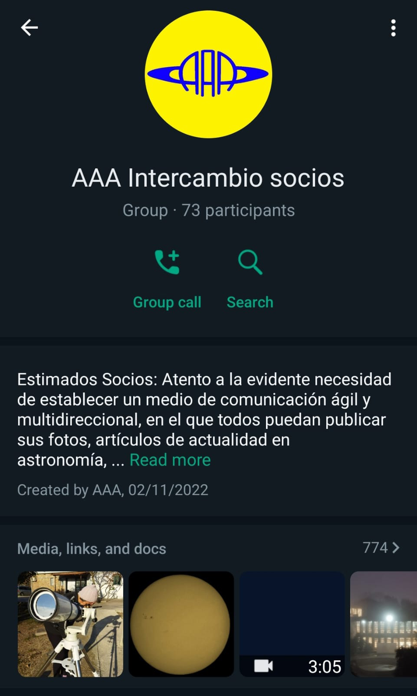
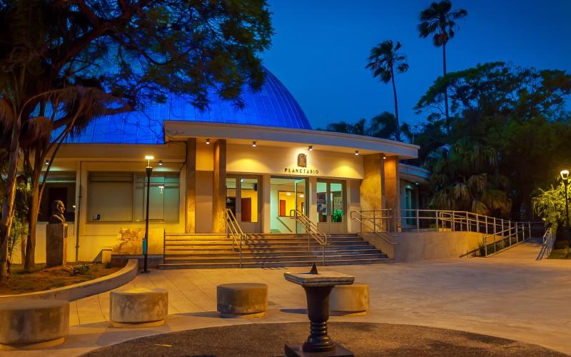

Comitente
Misión
La Asociación de Aficionados a la Astronomía del Uruguay es una asociación sin fines de lucro que busca promover y fomentar esta apasionante ciencia.

Historia
Origen
La Asociación de Aficionados a la Astronomía fue fundada el 16 de octubre de 1952 por un grupo de entusiastas amantes de la astronomía, incluyendo al Profesor Juan Diego Sans, Don Juan Angel Viera, la Profesora y Licenciada Esmeralda Mallada (socia vigente) y la Prof. Gladys Vergara. Inicialmente, la asociación se reunía en el local de la Asociación de Estudiantes de Medicina, pero luego se trasladó al Planetario Municipal, el cual fue apoyado y promovido por la propia asociación.
A lo largo de los años, la asociación ha experimentado cambios y ha desarrollado nuevos proyectos, como la edición de una revista, la adquisición de instrumentos, la construcción de un observatorio y un taller de construcción de telescopios, así como la impartición de cursos de astronomía que posteriormente fueron adoptados por el propio Planetario Municipal. El objetivo principal de la asociación es reunir a los amantes de la astronomía y proporcionar un espacio para el crecimiento personal, el intercambio de experiencias y el aprendizaje continuo.
En su sitio web la asociación declara que su objetivo inicial se mantiene vigente:
“nuclear a los amantes de la astronomía y dar el espacio para el crecimiento personal de todos y cada uno, con el intercambio de experiencias y el aprendizaje continuo, en el entendido que el avance de la ciencia y el conocimiento humano, son la base del crecimiento de la sociedad y la especie humana en su conjunto” (https://www.aaa.org.uy/)
La Asociación de Aficionados a la Astronomía ha demostrado su compromiso con la difusión de la ciencia astronómica y ha trabajado arduamente para mantenerse al margen de expresiones religiosas o ideas políticas, siguiendo el consejo de su fundador, Carlos Cardalda, quien experimentó dificultades en Argentina debido a razones políticas e ideológicas.
Historia reciente
Durante el año 2020 sucedieron una serie de intermitencias en las reuniones y actividades de la asociación a causa de las medidas sanitarias debidas a la pandemia de Covid-19.
En enero de 2021 se llamó a elecciones de la institución dando lugar a un cambio de autoridades. En octubre del mismo año, diferencias entre algunos socios y directivos dio lugar a un conflicto en un grupo de whatsapp, lo que derivó en que la directiva completa abandonara el grupo de mensajería y emitiera una nota en el sitio web de la AAA. En dicha nota se aclara que el grupo (creado por el presidente anterior) no es oficial, se deslindan responsabilidades y se indica cual es el grupo oficial de la asociación.
19/10/21 Grupo WhatsApp Oficial AAAA principios de febrero de 2022 se llamó a elecciones nuevamente, pero para fines de mes se informó que no se recibió ninguna lista para ser electa y se llamó a una asamblea general extraordinaria para regularizar la situación. En dicha asamblea se definió una comisión directiva provisoria para conducir la asociación y llamar a nuevas elecciones para febrero del 2023.
En este periodo hubo cierta intermitencia, pero se retomaron algunas actividades incluyendo una jornada observacional abierta al público con más de 300 visitantes y un festejo por el 70 aniversario de la AAA. Quien escribe participó en estos eventos y considera pertinente describir sucintamente el festejo de los 70 años de fundación de la asociación en calidad de observador participante. La reunión se llevó a cabo en la sala del planetario el 18 de octubre a las 18 hs. El programa consistió en una breve oratoria, entrega de medallas a socios con mayor antigüedad, una función en la cúpula del planetario proyectando el cielo de octubre de 1952 (cuando se fundó la AAA) acompañada del virtuosismo del laúd de Álvaro Córdoba y un posterior brindis. Una experiencia muy serena, un clima de reencuentro y fraternidad, con participación principalmente de adultos de mediana y avanzada edad.
 16/10/22 70º Aniversario
16/10/22 70º Aniversario
En febrero de 2022 se llevaron a cabo nuevas elecciones, con una única lista participante compuesta esencialmente por los miembros de la comisión provisoria. Esta lista se oficializó para el ejercicio de marzo 2023 a marzo 2024.
 25/2/2022 CONVOCATORIA ASAMBLEA EXTRAORDINARIA
25/2/2022 CONVOCATORIA ASAMBLEA EXTRAORDINARIA
Actividades


La asociación lleva a cabo distintas actividades relacionadas con la astronomía. Una de las actividades principales es la publicación Canopus, una revista especializada en temáticas astronómicas con artículos de divulgación. La asociación también brinda cursos de astronomía abiertos al público y 2 charlas temáticas al mes. Cuando el clima lo permite, los socios se reúnen para jornadas de observación en el observatorio Los Molinos (cerca de la ciudad de Las Piedras) o en jornadas de observación abiertas a todo público que han llegado a recibir cientos de visitantes. Miembros de la AAA han formado grupos que participan en proyectos de ciencia ciudadana que han logrado entre otras cosas describir varios asteroides nuevos. Recientemente se comunicó la creación de un grupo especializado en astronomía solar a cargo de María Cristina Lecuna.
Análisis comunicaciones de la AAA
Sistema visual
La AAA carece de un sistema de identidad visual como tal. No obstante, cuenta con un isologo y un par de colores institucionales que se desprenden de este elemento simbólico. La solución técnica del isologo en sí cae en un lugar común en temática astronómica: representar los anillos de un planeta (típicamente Saturno). Por otro lado, el signo en cuestión tiene un largo recorrido y la apropiación de sus usuarios es patente.
Sitio web
La AAA cuenta con un sitio web construido en wordpress con el theme Tempera y asociado al dominio: www.aaa.org.uy
El sitio cuenta con artículos de divulgación, anuncios institucionales, links a las plataformas digitales de redes sociales de la AAA, un buscador de la biblioteca de la asociación, contenido multimedia y algunos accesorios de utilidad para observadores del cielo (meteorología, cartas celestes, etc.).
El sitio es robusto y contempla una variedad de necesidades de la institución. En materia de comunicación visual existe potencial de mejora unificando criterios y priorizando la legibilidad, entre otros.
La información del sitio está desactualizada y el blog se utiliza de forma irregular sin un cronograma concreto.
La asociación cuenta con un celular compartido entre los miembros de la comisión directiva desde el cual vía whatsapp se emiten comunicaciones a los socios a través de un chat de una sola dirección. En este canal se emiten comunicados generales, se anuncia el ingreso de nuevos socios, se comparte la versión digital de la revista Canopus, etc.
Paralelamente existe un grupo de chat en whatsapp abierto donde socios y algunos no socios comparten la afición. El grupo es de libre expresión, pero se insiste en limitar las comunicaciones a temas relacionados con la astronomía. Este grupo recibe interacciones diarias y es probablemente el canal más activo entre los socios.
Facebook, Instagram y Twitter
La AAA tiene cuentas abiertas en estas 3 plataformas, pero en todas ellas la actividad es irregular, dando lugar a períodos larguísimos sin actividad llegando incluso a anunciar eventos luego de realizarlos evidenciando carencias a nivel organizacional en gestión de estas plataformas.
Se evidencia también pluralidad de criterios en materia de comunicación y especialmente criterios de composición visual y legibilidad.
Facebook: 2.4 mil seguidores; Instagram: 648 seguidores; Twitter: 360 Seguidores
Canopus
Con 40 años y más de 300 números editados, la revista Canopus es el buque insignia de los proyectos comunicativos de la AAA. Es una revista especializada en temáticas astronómicas con artículos de divulgación que abarcan diferentes niveles de complejidad. Aquí suelen publicarse notas sobre actividades de la asociación y comunicados institucionales así como fotografías destacadas realizadas por los socios.
Formalmente la revista tiene margen de mejora con respecto al diseño editorial, grillas y jerarquías tipográficas entre otros detalles. Por otro lado, en los últimos números se evidencia un proceso de refinamiento en estos detalles.
Ubicación
La AAA tiene sede en el Planetario de Montevideo “Agr. Germán Barbato” en la Avenida Gral. Rivera 3275, en el actual Parque de la Amistad, en el barrio céntrico de Pocitos. Tanto el parque como el propio planetario (en cuyas instalaciones se alberga la AAA) cuentan con rampas y otras medidas de accesibilidad. Por otro lado, este emplazamiento en plena ciudad con una gran contaminación lumínica no es apropiado para observar los astros.

Autoridades actuales
Lista: 21
Lema: Unidos por la astronomía
Presidente: Gerardo Chans
Comisión Directiva
- Eduardo Campo
- Diego Cancela
- Milton Cea
- Hugo Fraga
- Fernando Gonzalez
- Enrique Hernandez
- Maria Cristina Lecuna
- Diego Arenas
- Ignacio Izquierdo
- Nicolas Tominich
Comisión Fiscal
- Daniel Chiesa
- Rosario Rebellato
- Nancy Sosa
- Alejandro Castelar
- Susana Alvez